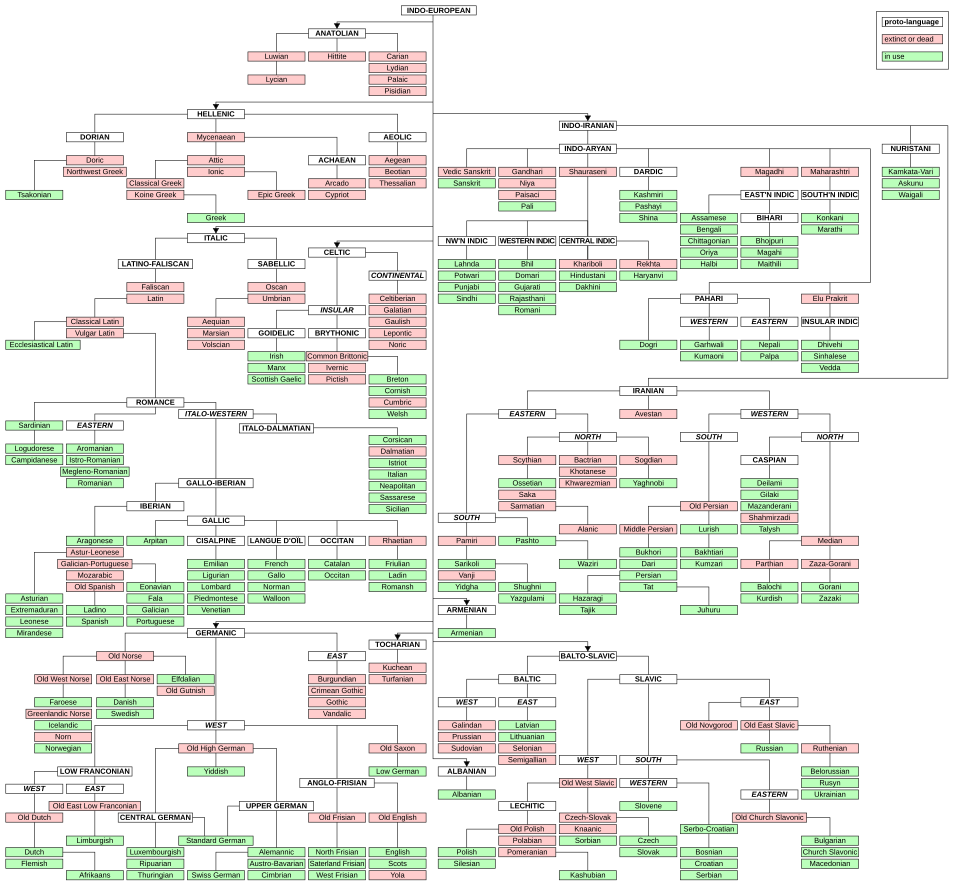

Scheme of Indo-European dispersals from the Pontic steppe, c. 4000–1000 BCE. (Image: Wikimedia Commons)
Generated by openrouter/qwen/qwen3.6-plus:free · April 9, 2026
Proto-Indo-European (PIE) is the reconstructed common ancestor of the Indo-European language family. Though no direct written records exist, scholars have painstakingly reconstructed its vocabulary, grammar, and phonology through comparative analysis of descendant languages that today span from Iceland to India and include over 3 billion speakers worldwide.
European visitors to India in the 16th century noted similarities between Sanskrit and European languages. In 1653, Dutch scholar Marcus Zuerius van Boxhorn proposed a proto-language called "Scythian" as the ancestor of Germanic, Romance, Greek, Baltic, Slavic, Celtic, and Iranian languages—a remarkably prescient insight.
In 1767, French Jesuit Gaston-Laurent Coeurdoux, who spent most of his life in India, demonstrated clear analogies between Sanskrit and European languages in a memoir to the Académie des Inscriptions et Belles-Lettres.
The watershed moment came when Sir William Jones, an Anglo-Welsh philologist serving as a judge in Bengal, delivered his famous Third Anniversary Discourse to the Asiatic Society in 1786. Jones observed:
"The Sanskrit language, whatever be its antiquity, is of a wonderful structure; more perfect than the Greek, more copious than the Latin, and more exquisitely refined than either, yet bearing to both of them a stronger affinity, both in the roots of verbs and in the forms of grammar, than could possibly have been produced by accident; so strong indeed, that no philologer could examine them all three, without believing them to have sprung from some common source, which, perhaps, no longer exists."
Jones also included Gothic, Celtic, and Old Persian in this family. This address is traditionally cited as the beginning of modern Indo-European studies.
German linguist August Schleicher (1821–1868) made the first systematic attempt to reconstruct PIE itself. His Compendium of the Comparative Grammar of the Indo-European, Sanskrit, Greek and Latin Languages (1874–77) included reconstructed forms and a famous fable, The Sheep and the Horses, composed in his reconstruction of PIE—demonstrating that the comparative method could recover actual prehistoric speech.
PIE is not attested in any written records. It exists only as a scientific reconstruction based on comparing descendant languages. Linguists use the asterisk (*) to mark reconstructed forms—hypothetical words representing scholarly consensus.
PIE is generally dated to approximately 4500–2500 BCE, spanning the Late Neolithic to Early Bronze Age. The exact timeframe varies by hypothesis:
PIE had remarkably complex grammar:

The Indo-European language family tree showing major branches. Red indicates extinct languages. (Image: Wikimedia Commons)
The location of the Proto-Indo-European homeland (Urheimat) has been one of the most debated questions in linguistics and archaeology. Three major hypotheses dominate:
Proposed by: Marija Gimbutas (1956), developed by David W. Anthony and others
Location: Pontic-Caspian steppe (modern Ukraine, Russia, Kazakhstan)
Date: ~4000–3500 BCE
Evidence:
This is currently the most widely accepted hypothesis among Indo-Europeanists.
Proposed by: Colin Renfrew (1987)
Location: Anatolia (modern Turkey)
Date: ~7500–6000 BCE
Evidence:
Critics note that PIE vocabulary includes terms for technologies (wheeled vehicles, bronze) that postdate the Neolithic farming expansion.
Recent developments (2023–2025): Max Planck Institute research proposes a hybrid model:
This model accounts for both deep genetic connections to the Caucasus and later steppe expansions evidenced by ancient DNA.
Beginning in 2015, studies of ancient DNA transformed the debate. Research by Haak et al. (2015) and Allentoft et al. (2015) demonstrated that the Yamnaya people were a genetic mixture of Eastern European Hunter-Gatherers and Caucasus Hunter-Gatherers. Modern Europeans carry 10–50% steppe ancestry, depending on region.
Scheme of Indo-European dispersals from the Pontic steppe, c. 4000–1000 BCE. (Image: Wikimedia Commons)
An important phonological division separates PIE descendants:
The names come from the Latin and Avestan words for "hundred": centum [k] vs. satem [s].
The comparative method remains the foundation of Indo-European reconstruction. Linguists compare cognate words across descendant languages, identify systematic sound correspondences, and reconstruct ancestral forms. For example:
| PIE | English | Latin | Greek | Sanskrit | Meaning |
|---|---|---|---|---|---|
| *méh₂tēr | mother | māter | mḗtēr | mātár- | mother |
| *ph₂tḗr | father | pater | patḗr | pitár- | father |
| *bʰréh₂tēr | brother | frāter | phrḗtēr | bhrā́tar- | brother |
| *swésōr | sister | soror | éor | svásar- | sister |
| *dʰugh₂tḗr | daughter | — | thugátēr | duhitár- | daughter |
| *kʷekʷlom | wheel | — | kúklos | cakrá- | wheel |
In 1879, Ferdinand de Saussure proposed that certain vowel alternations could be explained by hypothetical "coefficients sonantiques" (laryngeals *h₁, *h₂, *h₃). The theory was vindicated in 1927 when Jerzy Kuryłowicz showed that Hittite ḫ represented consonantal reflexes of these sounds. Today, the laryngeal theory is fundamental to PIE reconstruction.
Historical linguistics operates on the principle that sound change is regular:
The reconstructed vocabulary offers a remarkable window into the lives of PIE speakers:
| Meaning | PIE | English | German | Latin | Greek | Sanskrit |
|---|---|---|---|---|---|---|
| heart | *ḱḗr | heart | Herz | cor | kardía | hṛd- |
| foot | *pṓds | foot | Fuß | pēs | poús | pād- |
| three | *tréyes | three | drei | trēs | treîs | trí |
| new | *néwos | new | neu | novus | néos | náva- |
| night | *nókʷts | night | Nacht | noct- | nýx | nák- |
| mead/honey | *médʰu | mead | Met | — | mélthy | mádhu |
| wolf | *wĺ̥kʷos | wolf | Wolf | lupus | lýkos | vṛ́ka- |